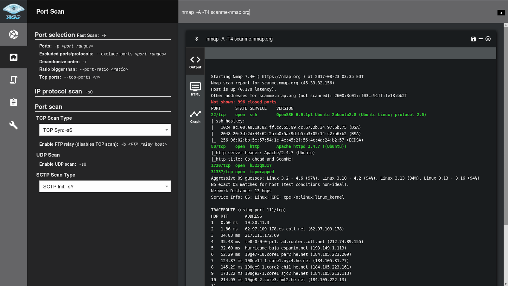
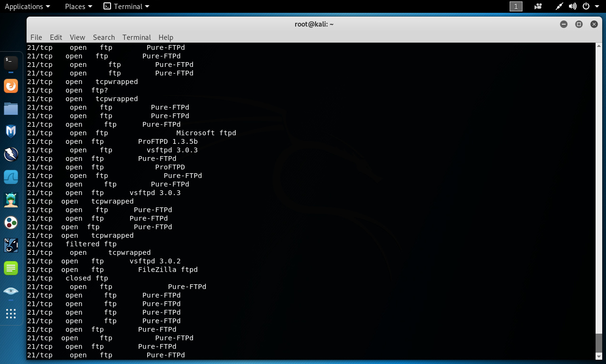
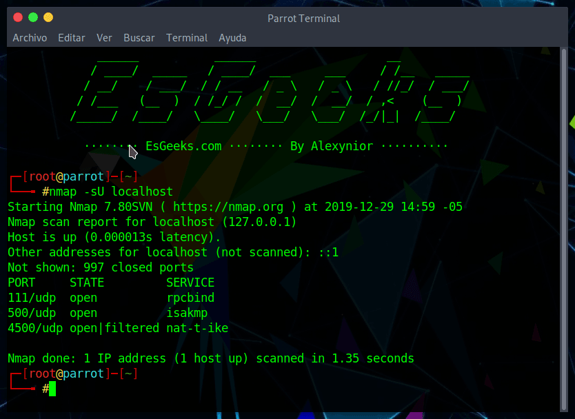

CIBERSEGURIDAD
- Ejemplos de principales tipos de ciberdelincuencia
Phishing: El phishing es una técnica en la que los delincuentes se hacen pasar por entidades legítimas,
como bancos o empresas, con el objetivo de obtener información confidencial de las víctimas, como contraseñas o números de tarjetas de crédito.
Malware: El malware es software malicioso diseñado para dañar o infiltrarse en sistemas informáticos sin el consentimiento del propietario.
Puede incluir virus, gusanos, troyanos, ransomware y spyware.
Estafas en línea: Las estafas en línea se refieren a engaños que se llevan a cabo a través de internet.
Esto puede incluir estafas de compras en línea,
ofertas falsas, esquemas de inversión fraudulentos o fraudes de
soporte técnico.
Robo de datos: El robo de datos implica el acceso no autorizado
a información confidencial, como datos personales, información financiera o secretos comerciales. Los delincuentes pueden utilizar esta información para cometer fraude,
extorsionar o venderla en el mercado negro.
Ciberacoso y acoso en línea: El ciberacoso se refiere al uso de medios digitales, como redes sociales o mensajería instantánea, para acosar, amenazar o intimidar a otros. Esto puede incluir el envío de mensajes ofensivos,
difamación o la divulgación no consensuada de información privada.
Ataques de denegación de servicio (DDoS): Los ataques de denegación de servicio tienen como objetivo saturar un sistema o red con una cantidad abrumadora de tráfico, lo que hace que se vuelva inaccesible para los usuarios legítimos. Estos ataques pueden interrumpir el funcionamiento
normal de sitios web, servicios en línea o infraestructuras de red.
Fraude financiero en línea: Esto implica el uso de internet
para realizar actividades fraudulentas relacionadas con las transacciones financieras. Puede incluir robo de información bancaria, falsificación de tarjetas de crédito, fraudes
de transferencias de dinero o esquemas de inversión fraudulentos.
- Motivos del aumento de los ciberdelitos
Mayor conectividad y dependencia de la tecnología.
Potencial para obtener beneficios financieros.
Anonimato y dificultad para rastrear a los delincuentes.
Avances tecnológicos que permiten nuevas formas de ciberdelincuencia.
- Quiénes suelen ser los ciberdelincuentes
Los ciberdelincuentes suelen ser personas o grupos que realizan actividades ilegales en el ámbito digital. Pueden incluir desde hackers éticos y maliciosos hasta miembros de organizaciones del crimen cibernético, insiders
(personas internas a una organización que abusan de su acceso) y
otros individuos con conocimientos técnicos avanzados.
La identificación exacta de los ciberdelincuentes puede ser difícil
debido al anonimato
en línea y a las técnicas utilizadas para ocultar su identidad.
Tipo de ciberdelincuentes:
Hackers éticos (white-hat hackers).
Hackers maliciosos (black-hat hackers).
Grupos del crimen organizado.
Insiders (personas internas a una organización que abusan de su acceso).
La captura de los ciberdelincuentes puede ser un proceso complejo
y requiere la colaboración de diversos actores, incluyendo agencias
de aplicación de la ley, empresas de seguridad cibernética y
proveedores de servicios en línea. A continuación se presentan
algunas de las estrategias
y técnicas utilizadas para capturar a los ciberdelincuentes:
Rastreo digital y análisis forense: Se utilizan técnicas de rastreo
digital para seguir la pista de los delincuentes en línea.
Esto implica examinar registros de servidores, registros de actividad
de red, direcciones IP y otras pistas digitales dejadas por los
delincuentes. El análisis forense de dispositivos
y sistemas comprometidos también puede proporcionar evidencia crucial.
Cooperación entre agencias de seguridad y empresas de tecnología:
Existe una colaboración constante entre agencias de seguridad,
como la policía cibernética y los organismos de investigación,
y empresas de tecnología para compartir información, recursos y
técnicas. Esto ayuda a identificar
y rastrear a los delincuentes cibernéticos de manera más efectiva.
Legislación y regulaciones: Las leyes y regulaciones relacionadas
con la ciberdelincuencia se han desarrollado para abordar y
perseguir estos delitos. Los delincuentes cibernéticos pueden ser
procesados legalmente y
extraditados en función de las jurisdicciones y acuerdos internacionales.
Colaboración internacional: Dado que la ciberdelincuencia es un
problema global, la cooperación internacional es fundamental. Los
acuerdos y tratados internacionales permiten el intercambio de
información y la colaboración en investigaciones conjuntas para
capturar a los delincuentes cibernéticos que operan en diferentes países.
Uso de señuelos y operaciones encubiertas: Las autoridades pueden
utilizar tácticas como la creación de perfiles falsos o la
infiltración encubierta en comunidades en línea para atraer y
exponer a los delincuentes cibernéticos. Estas operaciones
encubiertas pueden ayudar a recopilar
pruebas y obtener información sobre las actividades de los delincuentes.
- Motivaciones de los ciberdelincuentes:
Beneficio financiero.
Obtención de información sensible.
Vandalismo digital.
Espionaje industrial o político.
Activismo o hacktivismo.
- Qué es la DeepWeb y diferencia con la DarkWeb:
La DeepWeb es la parte de internet que no está indexada por los motores de búsqueda y no es accesible directamente.
La DarkWeb es una parte de la DeepWeb que se utiliza con fines ilegales y anónimos, donde se llevan a cabo actividades criminales.
- Qué capas del modelo OSI son implementadas por el sistema operativo (software) y cuáles están implementadas por hardware:
Las capas superiores (7 a 4) son implementadas por el software del sistema operativo.
Las capas inferiores (3 a 1) son implementadas por hardware (como routers y switches) y controladores de red.
- Describe qué es y cómo se utiliza NMap.
Nmap (Network Mapper) es una herramienta de código abierto utilizada para escanear redes y
descubrir hosts, servicios y puertos abiertos en una red. Utiliza técnicas de escaneo de red avanzadas para recopilar información sobre los sistemas objetivo.
Nmap se ejecuta desde la línea de comandos y puede funcionar en diversos sistemas operativos como Windows,
Linux, macOS, entre otros. Proporciona una amplia gama de opciones y funciones para adaptarse a diferentes necesidades de escaneo de red.
Descubrimiento de hosts: Nmap puede descubrir hosts activos en una red mediante el envío
de paquetes de sondeo, como ICMP Echo Request, TCP SYN, entre otros.
Escaneo de puertos: Puede identificar qué puertos están abiertos en los sistemas objetivo, lo que ayuda a determinar
qué servicios están en ejecución y a evaluar la seguridad de la red.
Detección de servicios y versiones: Nmap puede detectar los
servicios que se están ejecutando en los puertos abiertos y,
en muchos casos, incluso puede determinar la versión específica
del software que se está utilizando.
Escaneo de vulnerabilidades: Nmap cuenta con
funciones básicas de detección de vulnerabilidades,
como detección de scripts maliciosos o búsqueda de
problemas conocidos en los servicios encontrados.
Escaneo de redes avanzado: Nmap permite realizar escaneos
de red de manera eficiente mediante técnicas como escaneo
en paralelo, escaneo fragmentado, escaneo de puertos específicos,
entre otros.

- Describe qué es y cómo funciona el escaneo ARP
El escaneo ARP, también conocido como "Address Resolution Protocol", es una técnica utilizada en redes de computadoras
para obtener información sobre la correspondencia entre direcciones IP y direcciones MAC en una red local.
El protocolo ARP se utiliza para asociar direcciones IP, que son utilizadas por los dispositivos en la capa de red, con direcciones MAC,
que son utilizadas por los dispositivos en la capa de enlace de datos.
Cuando un dispositivo en una red local desea comunicarse con otro dispositivo, necesita conocer la dirección MAC del destinatario para
poder enviar los datos a través de la red. El escaneo ARP se utiliza para determinar estas asociaciones entre las direcciones IP y las direcciones MAC.
El proceso de escaneo ARP comienza cuando un dispositivo emite una solicitud de ARP en la red preguntando por la dirección MAC asociada
a una dirección IP específica. Esta solicitud se envía a través de una transmisión de difusión (broadcast) a todos los dispositivos en
la red local. Los dispositivos en la red reciben la solicitud y, si la dirección IP solicitada coincide con la suya, responden con su dirección MAC.
El dispositivo que realizó la solicitud ARP recibe estas respuestas y las utiliza para actualizar su tabla ARP, que es una tabla de caché
que almacena las asociaciones entre direcciones IP y direcciones MAC. De esta manera, el dispositivo puede construir una lista de direcciones
MAC en la red y utilizarla para enviar paquetes de datos a los dispositivos correspondientes.
Es importante destacar que el escaneo ARP es una herramienta útil para resolver problemas de conectividad en una red local
y también puede ser utilizado por atacantes para realizar ataques de suplantación de identidad o de envenenamiento de la tabla ARP.
Por esta razón, es importante mantener la seguridad de la red y aplicar medidas de protección adecuadas, como el uso de firewalls y
la detección de ataques ARP falsificados.
- Describe en qué consiste el escaneo de puertos.
El escaneo de puertos es una técnica utilizada para descubrir qué puertos
están abiertos en un sistema o dispositivo de red. Los puertos son puntos
de entrada y salida de una computadora o dispositivo que se utilizan para
establecer conexiones y permitir la comunicación a través de protocolos de red
específicos, como TCP (Transmission Control Protocol) y UDP (User Datagram Protocol).
- Describe cómo funciona el escaneo de puertos TCP. Mostrar captura de pantalla de su funcionamiento. Se puede usar cualquier programa de la documentación u otro distinto de Linux o Mac.
El escaneo de puertos TCP implica enviar paquetes TCP a diferentes puertos de destino y
analizar las respuestas recibidas. Los paquetes TCP están diseñados para establecer una
conexión confiable entre dos dispositivos y se espera que haya un intercambio específico
de mensajes de inicio de conexión. Al enviar paquetes TCP a diferentes puertos, se
pueden identificar aquellos que responden y, por lo tanto, se consideran abiertos.
Esto permite a los administradores de red y a los hackers identificar servicios y
aplicaciones que están en ejecución y disponibles en un sistema.
Se puede usar tanto en Linux como en Windows y con ciertas aplicaciones en Mac.

- Describe cómo funciona el escaneo de puertos UDP. Mostrar captura de pantalla de su funcionamiento. Se puede usar cualquier programa de la documentación u otro distinto de Linux o Mac.
El escaneo de puertos UDP funciona de manera similar al escaneo de puertos TCP, pero utilizando paquetes UDP en lugar de paquetes TCP. A diferencia de TCP, UDP es un protocolo sin conexión, lo que significa
que no se establece una conexión confiable antes de enviar los datos. El escaneo de
puertos UDP implica enviar paquetes de solicitud a diferentes puertos y analizar las
respuestas recibidas. Si se recibe una respuesta, se considera que el puerto está
abierto.
Es importante tener en cuenta que, a diferencia del escaneo de puertos TCP, el escaneo
de puertos UDP puede ser menos confiable debido a la naturaleza sin conexión y no fiable
del protocolo UDP. Además, algunos sistemas y firewalls pueden bloquear o filtrar los
paquetes UDP, lo que puede dificultar la detección de puertos abiertos. Por lo tanto,
el escaneo de puertos UDP puede requerir más pruebas y análisis adicionales para
obtener resultados precisos.
Solo se puede usar en Windows ,Linux y Mac con Nmap,hping y Netcat.

- Describe los principales tipos de ataques de red
Ataque de Denegación de Servicio (DDoS):
Consiste en abrumar un sistema o red con
una cantidad masiva de tráfico o solicitudes,
lo que provoca la saturación del sistema y la
imposibilidad de brindar servicios a usuarios legítimos.
Ataque de Ingeniería Social: Implica manipular a las personas para
obtener información confidencial o persuadirlas para que realicen
acciones que comprometan la seguridad de una red. Puede incluir
phishing, pretexting, smishing, entre otros.
Ataque de Man-in-the-Middle (MitM): Un atacante intercepta y
monitorea las comunicaciones entre dos partes legítimas sin su
conocimiento. El atacante puede leer, modificar o redirigir el
tráfico de datos, lo que puede llevar al robo de información confidencial.
Ataque de Inyección SQL: Consiste en insertar código SQL malicioso
en una consulta para obtener acceso no autorizado a una base de datos
o para manipular su contenido. Esto puede permitir al atacante extraer
información, modificar datos o incluso tomar el control total del sistema.
Ataque de Cross-Site Scripting (XSS): Se aprovecha de vulnerabilidades
en las aplicaciones web para inyectar y ejecutar scripts maliciosos en
el navegador de los usuarios. Esto puede permitir al atacante robar
información, secuestrar sesiones o redirigir a los usuarios a sitios maliciosos.
Ataque de Fuerza Bruta: Consiste en intentar todas las combinaciones
posibles de contraseñas o claves hasta encontrar la correcta. Se
utiliza para obtener acceso no autorizado a sistemas o cuentas
protegidas por contraseñas débiles.
Ataque de Intercepción de Datos: Un atacante obtiene acceso no
autorizado a los datos en tránsito entre dos sistemas, lo que
le permite leer, modificar o robar información confidencial.
Ataque de Spoofing: El atacante falsifica su identidad o la
dirección IP de origen para engañar a la víctima y obtener
acceso no autorizado a sistemas o redes. Puede implicar spoofing
de dirección IP, de correo electrónico, de DNS, entre otros.
- ¿En qué consiste el SQL injection?
El SQL injection es una vulnerabilidad común en aplicaciones
web que permite a los atacantes manipular las consultas SQL
enviadas a una base de datos. Consiste en la inserción de código
SQL malicioso en los campos de entrada de una aplicación web
para ejecutar consultas no deseadas en la base de datos.
En resumen, el SQL injection ocurre cuando un atacante introduce
código SQL malicioso en los campos de entrada de una aplicación
web, como formularios de búsqueda o campos de inicio de sesión.
Esta información manipulada se envía a la base de datos sin ser
debidamente filtrada o validada, lo que permite que el código
malicioso se ejecute en la base de datos. Esto puede conducir
a la revelación de información confidencial, modificación o
eliminación de datos, o incluso la toma de control total del sistema.
Para prevenir el SQL injection, es crucial implementar buenas
prácticas de codificación, como el uso de consultas parametrizadas
o consultas preparadas, validación y sanitización de datos de
entrada, y restringir los privilegios de la cuenta de base de datos
utilizada por la aplicación. Además, mantenerse actualizado con
los parches de seguridad y realizar pruebas regulares de seguridad
puede ayudar a identificar y mitigar posibles vulnerabilidades de SQL injection.
- ¿En qué consiste el ataque XSS?
El ataque XSS (Cross-Site Scripting) es una vulnerabilidad que permite
a un atacante insertar y ejecutar scripts maliciosos en páginas web
visitadas por otros usuarios. Consiste en inyectar código malicioso
en campos de entrada de una aplicación web, como formularios o URL,
para que el código sea ejecutado por los navegadores de los usuarios.
En resumen, el ataque XSS ocurre cuando un atacante inserta código
JavaScript u otro tipo de código malicioso en campos de entrada de
una aplicación web. Cuando un usuario legítimo accede a una página
web que muestra los datos comprometidos, el código malicioso se
ejecuta en su navegador, lo que puede permitir al atacante robar
información confidencial, secuestrar sesiones de usuario, redirigir
a sitios web maliciosos o mostrar contenido falso.
Para prevenir el XSS, es importante implementar medidas de seguridad,
como la validación y el filtrado adecuado de datos de entrada, la
codificación correcta de salida en la aplicación web y el uso de
encabezados de seguridad HTTP, como el encabezado Content Security Policy
(CSP). Además, la educación y la conciencia sobre las mejores prácticas
de seguridad en el desarrollo web pueden ayudar a prevenir este tipo
de ataques.
- ¿Cómo se puede proteger una red wifi?
Cambiar el nombre de la red (SSID)
Establecer una contraseña segura
Utilizar cifrado de red
Filtrar las direcciones MAC
Desactivar el SSID broadcast
Mantener el firmware actualizado
Utilizar una VPN
Mantener dispositivos seguros
Configurar un cortafuegos
Desactivar la administración remota
- ¿Cómo realizan hackeas por ingeniería social?
La ingeniería social es una técnica utilizada por los hackers
para manipular y engañar a las personas con el fin de obtener
información confidencial o persuadirlas para que realicen acciones
que comprometan la seguridad de una red o sistema. A continuación,
se presenta un resumen de cómo se llevan a cabo los ataques de
ingeniería social:
Recopilación de información: Los hackers investigan y recopilan
información sobre la víctima o el objetivo, utilizando fuentes
como redes sociales, perfiles en línea, directorios de empresas,
etc.
Creación de un perfil creíble: Los hackers pueden crear perfiles
falsos o utilizar técnicas de suplantación de identidad para
hacerse pasar por personas o entidades confiables, como compañeros
de trabajo, amigos, representantes de servicio al cliente, etc.
Establecimiento de confianza: Los hackers utilizan tácticas de
manipulación emocional y persuasión para establecer una relación
de confianza con la víctima. Pueden elogiar, ofrecer ayuda,
simpatizar o aprovechar situaciones de urgencia para generar
confianza y disminuir la sospecha.
Manipulación psicológica: Los hackers explotan la curiosidad,
el miedo, la codicia o la compasión de la víctima para obtener
información o que realicen acciones no deseadas. Pueden utilizar
técnicas como el cebo, la urgencia o la intimidación para lograr
sus objetivos.
Engaño y phishing: Los hackers envían correos electrónicos,
mensajes de texto o mensajes en redes sociales falsificados
que aparentan ser legítimos, como solicitudes de restablecimiento
de contraseñas, actualizaciones de cuentas o premios falsos.
Estos mensajes suelen contener enlaces maliciosos o adjuntos
que instalan malware o dirigen a sitios web falsos diseñados
para robar información.
Manipulación telefónica: Los hackers pueden hacerse pasar por
representantes de una empresa o institución, solicitando
información confidencial o convenciendo a la víctima de que
realice acciones perjudiciales, como proporcionar contraseñas
o realizar transferencias de dinero.
Ataques de ingeniería social presenciales: Los hackers pueden
intentar infiltrarse físicamente en una organización, haciéndose
pasar por empleados, contratistas o personas de confianza para
obtener acceso a sistemas o información.
- ¿En qué consiste la autenticación multifactor?
La autenticación multifactor (MFA, por sus siglas en inglés) es un
método de seguridad que requiere que los usuarios proporcionen
múltiples factores de autenticación para verificar su identidad.
Consiste en combinar dos o más elementos diferentes, como algo
que el usuario conoce (contraseña), algo que el usuario posee
(tarjeta de acceso) y algo que el usuario es (huella dactilar
o reconocimiento facial).
En resumen, la autenticación multifactor agrega una capa adicional
de seguridad al requerir que los usuarios proporcionen más que
solo una contraseña para acceder a una cuenta o sistema. Esto
dificulta que los atacantes accedan a la información protegida,
incluso si obtienen o adivinan la contraseña, ya que también se
necesitaría un segundo factor de autenticación. La autenticación
multifactor se utiliza ampliamente en sistemas y servicios que
requieren un nivel elevado de seguridad, como banca en línea,
correo electrónico, redes sociales y aplicaciones empresariales,
entre otros.
- ¿Qué es el Credential Stuffing?
El Credential Stuffing es una técnica de ataque cibernético en la cual
los atacantes utilizan combinaciones de nombres de usuario y
contraseñas filtradas previamente para intentar acceder de manera
automatizada a diferentes cuentas en diversos servicios en línea.
Consiste en probar esas combinaciones de credenciales obtenidas
ilegalmente en diferentes sitios web y servicios con el objetivo
de encontrar coincidencias y obtener acceso no autorizado a las
cuentas.
En resumen, el Credential Stuffing se basa en el hecho de que muchas
personas utilizan las mismas credenciales (nombres de usuario y
contraseñas) en varios servicios en línea. Los atacantes aprovechan
esta falta de diversificación y utilizan software automatizado para
probar estas combinaciones en varios sitios web, aprovechando
filtraciones de datos previas. Si encuentran una coincidencia
exitosa, pueden obtener acceso a la cuenta y realizar acciones
maliciosas, como robar información, realizar compras fraudulentas
o utilizar la cuenta comprometida para realizar otros ataques.
Para protegerse del Credential Stuffing, es importante seguir buenas
prácticas de seguridad, como utilizar contraseñas únicas y fuertes
para cada cuenta, habilitar la autenticación multifactor siempre que
sea posible, mantenerse informado sobre las filtraciones de datos y
cambiar las contraseñas afectadas, y utilizar herramientas de gestión
de contraseñas para ayudar a generar y almacenar de forma segura
contraseñas únicas. También es fundamental que las organizaciones
implementen medidas de seguridad, como el monitoreo de actividad
sospechosa, la detección de patrones de acceso anormales y el uso
de soluciones de seguridad avanzadas para prevenir y mitigar
ataques de Credential Stuffing.